-
 深入理解计算机系统
深入理解计算机系统豆瓣评分9.8。最优秀的计算机系统导论型作品，它创造性的把操作系统，计算机组成结构，数字电路，以及编译原理这些计算机基础学科中的核心概念汇集在一起
-
 现代操作系统
现代操作系统豆瓣评分9.8。本书是操作系统的经典教材，与时俱进呈现当代操作系统的基础理论与研究动态。在这一版中，Tanenbaum教授力邀来自谷歌和微软的技术专家撰写关于Android和Windows的新章节，此外，还添加了云、虚拟化和安全等新技术的介绍。
-
程序员修炼之道
全球范围内广泛传播，被一代代开发者奉为圭臬，是因为它可以创造出真正的价值：或编写出更好的软件，或探究出编程的本质，而所有收获均不依赖于特定语言、框架和方法。
-
 计算机科学概论
计算机科学概论计算机科学概论课程的经典教材，全书对计算机科学做了百科全书式的精彩阐述，充分展现了计算机科学的历史背景、发展历程和新的技术趋势
-
 算法导论
算法导论豆瓣评分9.3。这本书深入浅出，全面地介绍了计算机算法。对每一个算法的分析既易于理解又十分有趣，并保持了数学严谨性。
-
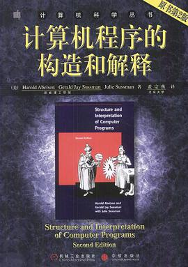UNIX环境高级编程
豆瓣评分9.4。本书是被誉为UNIX编程“圣经”，内容权威，概念清晰，阐述精辟，对于所有层次UNIX程序员都是一本不可或缺的参考书。
-
 代码大全
代码大全豆瓣评分9.3。一本完整的软件构建手册，涵盖了软件构建过程中的所有细节。它从软件质量和编程思想等方面论述了软件构建的各个问题，并详细论述了紧跟潮流的新技术、高屋建瓴的观点、通用的概念，还含有丰富而典型的程序示例
-
 编码
编码本书讲述的是计算机工作原理。作者用丰富的想象和清晰的笔墨将看似繁杂的理论阐述得通俗易懂，你丝毫不会感到枯燥和生硬。
-
 UNIX网络编程
UNIX网络编程豆瓣评分9.5。本书全面深入地介绍了如何使用套接口API进行网络编程。全书从对套接口API的综合讨论开始，论述了基本编程内容后，即转入高级套接口编程的相关主题，包括IPv4与IPv6的互操作性、UNIX域协议、非阻塞I/O、路由套接口、广播、多播、线程、原始套接口、数据链路访问等.
-
 设计模式
设计模式豆瓣评分9.1。这本书结合设计实作例从面向对象的设计中精选出23个设计模式，总结了面向对象设计中最有价值的经验，并且用简洁可复用的形式表达出来。
-
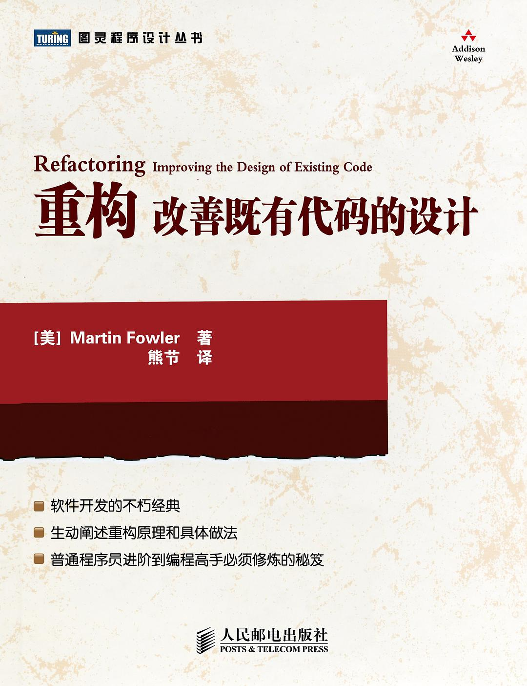重构-改善既有代码的设计
重构，一言以蔽之，就是在不改变外部行为的前提下，有条不紊地改善代码。本书凝聚了软件开发社区专家多年摸索而获得的宝贵经验，拥有不因时光流逝而磨灭的价值。
-
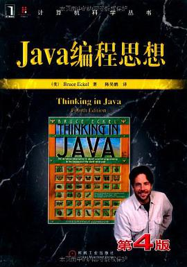Java编程思想
本书赢得了全球程序员的广泛赞誉，即使是最晦涩的概念，在Bruce Eckel的文字亲和力和小而直接的编程示例面前也会化解于无形。
-
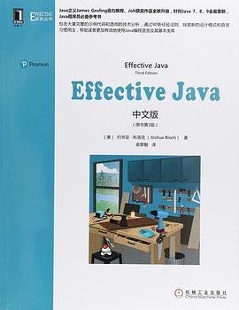Effective Java中文版
豆瓣评分9.5。本书一共包含90个条目，每个条目讨论Java程序设计中的一条规则。这些规则反映了最有经验的优秀程序员在实践中常用的一些有益的做法。
-
 Java并发编程实战
Java并发编程实战本书深入浅出地介绍了Java线程和并发，是一本完美的Java并发参考手册。
-
 深入理解Java虚拟机
深入理解Java虚拟机这是一部从工作原理和工程实践两个维度深入剖析JVM的著作，是计算机领域公认的经典，繁体版在台湾也颇受欢迎。
-
 Java性能权威指南
Java性能权威指南本书详尽讲解了Java性能调优的相关知识，帮助读者深入理解Java平台性能的各个方面，最终使程序如虎添翼。
-
 Spring 揭秘
Spring 揭秘本书是作者在多年的工作中积累的第一手Spring框架使用经验的总结，深入剖析了Spring框架各个模块的功能、出现的背景、设计理念和设计原理，揭开了Spring框架的神秘面纱，使你“知其然，更知其所以然”。
-
 Java核心技术·卷 I
Java核心技术·卷 I书由拥有20多年教学与研究经验的资深Java技术专家撰写（获Jolt大奖），是程序员的优选Java指南。本版针对Java SE 9、10和 11全面更新。
-
Java核心技术·卷 II
书中对Java复杂的新特性进行了深入而全面的研究，展示了如何使用它们来构建具有专业品质的应用程序
-
 Python编程-从入门到实践
Python编程-从入门到实践应该是世界上最畅销的Python编程书，没有之一,英文名叫作《Python crash course》，作者Eric Matthes是一名高中老。
-
 Python学习手册
Python学习手册如果你想动手编写高效、高质量并且很容易与其他语言和工具集成的代码，本书将快速地帮助你利用Python提高效率。
-
 流畅的Python
流畅的Python本书由奋战在Python开发一线近20年的Luciano Ramalho执笔，Victor Stinner、Alex Martelli等Python大咖担纲技术审稿人，从语言设计层面剖析编程细节，兼顾Python 3和Python 2
-
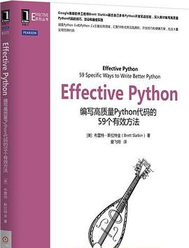Effective Python
本书作者Brett Slatkin就以这种方式汇聚了59条优秀的实践原则、开发技巧和便捷方案，并以实用的代码范例来解释它们。
-
Python Cookbook 中文版
本书覆盖了Python应用中的很多常见问题，并提出了通用的解决方案。
-
 Python 3网络爬虫开发实战
Python 3网络爬虫开发实战本书介绍了如何利用Python 3开发网络爬虫,通过多个案例介绍了不同场景下如何实现数据爬取。
-
 Python深度学习
Python深度学习本书由Keras之父、现任Google人工智能研究员的弗朗索瓦•肖莱（François Chollet）执笔，详尽介绍了用Python和Keras进行深度学习的探索实践，涉及计算机视觉、自然语言处理、生成式模型等应用。
-
 Python数据科学手册
Python数据科学手册本书是对以数据深度需求为中心的科学、研究以及针对计算和统计方法的参考书。本书共五章，每章介绍一到两个Python数据科学中的重点工具包。
-
 Flask Web开发实战
Flask Web开发实战这是一本面向Python程序员的，全面介绍Python Web框架Flask的书。
-
 利用Python进行数据分析
利用Python进行数据分析本书由pandas项目创始人Wes McKinney亲笔撰写，详细介绍利用Python进行操作、处理、清洗和规整数据等方面的具体细节和基本要点。
-
Python金融衍生品大数据分析
Python 在衍生工具分析领域占据重要地位，使机构能够快速、有效地提供定价、交易及风险管理的结果。
-
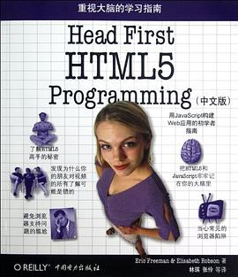Head First HTML5 Programming
最好的入门书，看两遍就对HTML & CSS 有个大概印象了。
-
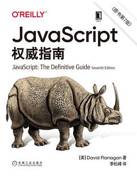JavaScript权威指南
近25年来，这本畅销书一直是几十万JavaScript程序员必读的技术著作，本版已经更新到涵盖JavaScript的2020版。
-
JavaScript高级程序设计
本书是JavaScript 超级畅销书的最新版，适合有一定编程经验的Web 应用开发人员阅读。
-
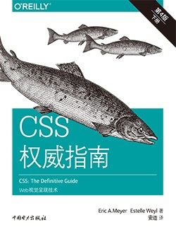CSS权威指南
本书两位作者 Eric Meyer 和 Estelle Weyl 向您展示了如何通过布局、过渡和动画、边框、背景、文本属性，以及许多其他工具和技术来改善用户体验
-
CSS选择器世界
CSS选择器是CSS世界的支柱，撑起了整个精彩纷呈的CSS世界。
-
CSS揭秘
本书是一本注重实践的教程，作者为我们揭示了 47 个鲜为人知的 CSS 技巧，主要内容包括背景与边框、形状、 视觉效果、字体排印、用户体验、结构与布局、过渡与动画等。
-
 jQuery 技术内幕
jQuery 技术内幕本书在分析每个模块时均采用由浅入深的方式，先概述功能、用法、结构和实现原理，然后介绍关键步骤和和分析源码实现。让读者不仅知其然，而且知其所以然。
-
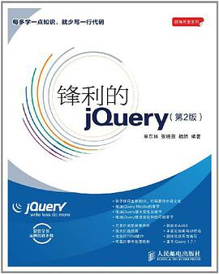锋利的jQuery
循序渐进地对jQuery的各种函数和方法调用进行了介绍。
-
 Effective JavaScript
Effective JavaScript作者凭借多年标准化委员会工作和实践经验，深刻辨析JavaScript 的内部运作机制、特性、陷阱和编程最佳实践，将它们高度浓缩为极具实践指导意义的 68 条精华建议。
-
 高性能网站建设指南
高性能网站建设指南结合Web 2.0以来Web开发领域的最新形势和特点，介绍了网站性能问题的现状、产生的原因，以及改善或解决性能问题的原则、技术技巧和最佳实践。
-
 图解 HTTP
图解 HTTP本书对互联网基盘——HTTP协议进行了全面系统的介绍。
-
 HTTP权威指南
HTTP权威指南本书中，我们尝试着将HTTP中一些互相关联且常被误解的规则梳理清楚，并编写了一系列基于各种主题的章节，对HTTP各方面的特性进行了介绍。
-
 Node.js实战
Node.js实战本书从不同的视角介绍了 Node 内在的特点和结构。
-
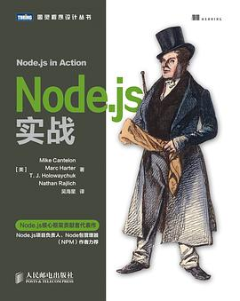深入浅出Node.js
本书向读者展示了如何构建产品级应用，对关键概念的介绍清晰明了，贴近实际的例子，涵盖从安装到部署的各个环节，是一部讲解与实践并重的优秀著作。
-
 Web性能权威指南
Web性能权威指南本书是谷歌公司高性能团队核心成员的权威之作，堪称实战经验与规范解读完美结合的产物。
-
 深入浅出Vue.js
深入浅出Vue.js本书从源码层面分析了Vue.js。
-
深入React技术栈
全面讲述React技术栈的第一本原创图书，pure render专栏主创倾力打造。
-
Angular权威教程
本书堪称Angular领域的里程碑式著作，涵盖了关于Angular的几乎所有内容。
-
C程序设计语言
豆瓣评分9.4。在计算机发展的历史上，没有哪一种程序设计语言像C语言这样应用广泛。本书作者是C语言的设计者之一Dennis M. Ritchie和著名计算机科学家Brian W. Kernighan合著的一本介绍C语言的权威经典著作。
-
 C++ Primer 中文版
C++ Primer 中文版豆瓣评分9.4。这本久负盛名的 C++ 经典教程，书中丰富的教学辅助内容、醒目的知识点提示，以及精心组织的编程示范，让这本书在 C++ 领域的权威地位更加不可动摇。
-
 Go程序设计语言
Go程序设计语言人手一本的Go语言“圣经”。
-
Go Web 编程
围绕一个网络论坛 作为例子，教授读者如何使用请求处理器、多路复用器、模板引擎、存储系统等核心组件去构建一个 Go Web 应用，然后在该应用的基础上，构建出相应的 Web 服务。
-
 PHP与MySQL程序设计
PHP与MySQL程序设计本书是全面讲述PHP 与MySQL 的经典畅销之作，不但详细介绍了这两种技术及其相关工具的核心特性，还讲解了如何高效地结合这两种技术构建出健壮的数据驱动的应用程序
-
R语言实战
本书注重实用性，是一本全面而细致的R指南，高度概括了该软件和它的强大功能，展示了使用的统计示例，且对于难以用传统方法处理的凌乱、不完整和非正态的数据给出了优雅的处理方法。
-
 数据密集型应用系统设计
数据密集型应用系统设计吐血推荐，本书豆瓣评分9.7分，堪称分布式领域圣经，本人非常后悔没有更早的阅读本书。
-
 漫画算法：小灰的算法之旅
漫画算法：小灰的算法之旅通过虚拟的主人公小灰的心路历程，用漫画的形式讲述了算法和数据结构的基础知识、复杂多变的算法面试题目及算法的实际应用场景。
-
 TCP/IP详解 卷1：协议
TCP/IP详解 卷1：协议本书主要讲述TCP/IP协议，展示每种协议的实际工作原理的同时还解释了其来龙去脉
-
Kubernetes权威指南
分别讲解Kubernetes的基本概念、实践指南、核心原理、开发指南、网络与存储、运维指南、新特性演进等内容。
-
 高性能MySQL
高性能MySQLmysql 领域的经典之作，拥有广泛的影响力。内容涵盖mysql 架构和历史，基准测试和性能剖析，数据库软硬件性能优化，复制、备份和恢复，高可用与高可扩展性
-
 Redis开发与运维
Redis开发与运维本书全面讲解Redis基本功能及其应用，并结合线上开发与运维监控中的实际使用案例，深入分析并总结了实际开发运维中遇到的“陷阱”，以及背后的原因。
-
 Redis实战
Redis实战本书深入浅出地介绍了Redis的5种数据类型，并通过多个实用示例展示了Redis的用法。
-
RabbitMQ实战指南
从消息中间件的概念和RabbitMQ的历史切入，主要阐述RabbitMQ的安装、使用、配置、管理、运维、原理、扩展等方面的细节。
-
 Kafka权威指南
Kafka权威指南本书详细介绍了如何部署Kafka集群、开发可靠的基于事件驱动的微服务，以及基于Kafka平台构建可伸缩的流式应用程序
-
MongoDB权威指南
书中介绍了面向文档的存储方式及利用MongoDB的无模式数据模型处理文档、集合和多个数据库
-
HBase权威指南
探讨了如何通过使用与hbase高度集成的hadoop将hbase的可伸缩性变得简单
-
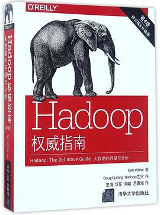Hadoop权威指南
本书结合理论和实践，由浅入深，全方位介绍了Hadoop 这一高性能的海量数据处理和分析平台。
-
深入理解Nginx
书中首先通过介绍官方Nginx的基本用法和配置规则，帮助读者了解一般Nginx模块的用法。